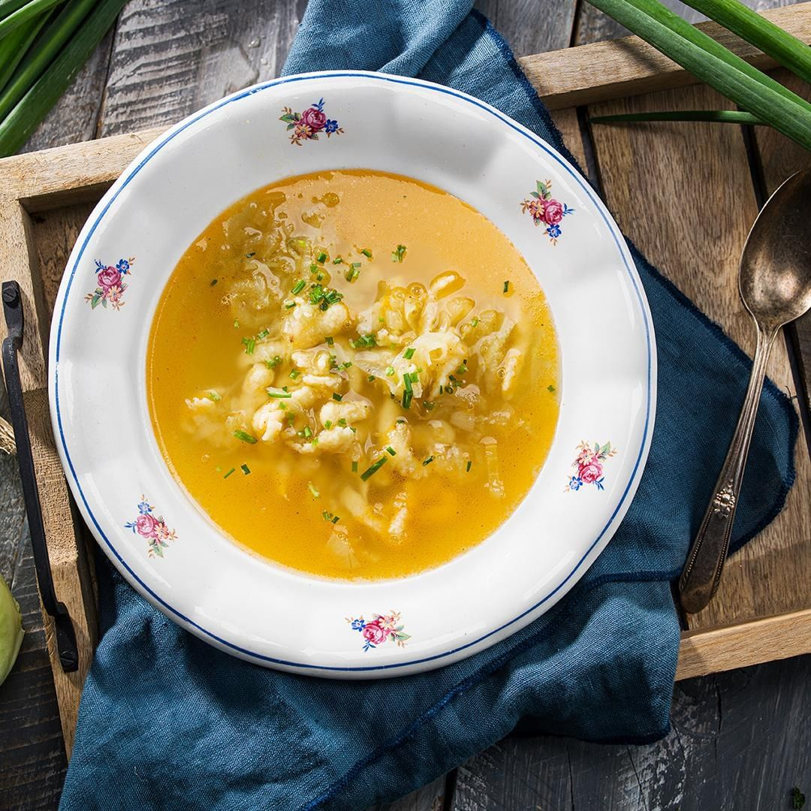

Kalerábová polievka podľa @komora_coopjednota — Normy Jedál
Ak ho má kto doma nakrájať, šťavnatý kaleráb je chrumkavá pochúťka, ktorá veľmi rýchlo mizne z taniera. Rovnako dobrá je z neho aj polievka podľa nášho videoreceptu na bit.ly/kalerabova-polievka. 😋⠀
#komoragazdin #recept #videorecept #kalerab #pazitka #halusky #polievka #rychlyobed #rychlapolievka #polievkajezaklad #zelenina #kalerabovapolievka #zeleninovapolievka #dobruchut